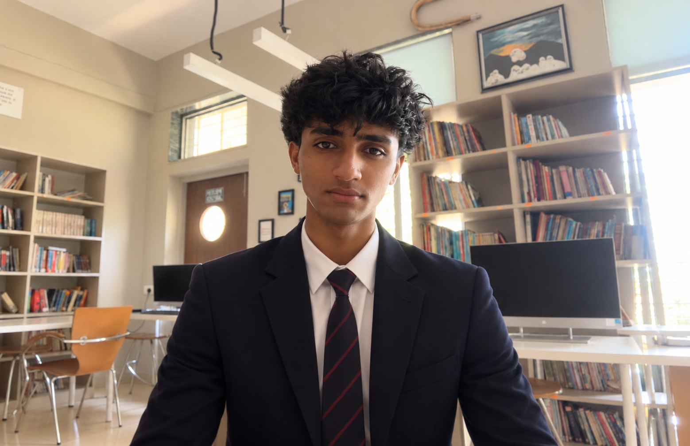

01 / about
The person
behind the player.
I’m Sushank Kumar Singh — a Grade 12 student at Corvuss American Academy exploring Computer Science and AI while building the instincts, discipline, and team IQ of a basketball player.

Grade 12 · age 17Full nameSushank Kumar Singh
SchoolCorvuss American Academy
Grade / age12th · 17
Academic focusComputer Science + AI
The court keeps me present; the classroom keeps me asking better questions.
My daily routine balances studying, sharpening my understanding of AI and programming, and training in basketball. I am building a profile that values curiosity, discipline, and consistent work.
Basketball has taught me resilience, focus, and strategic thinking — qualities that help me build better projects, learn faster, and keep moving toward the next challenge.